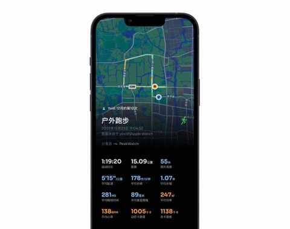
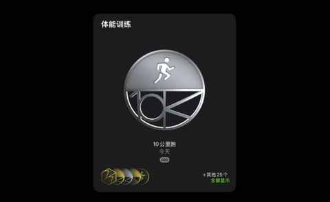
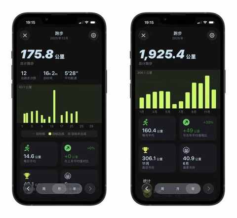
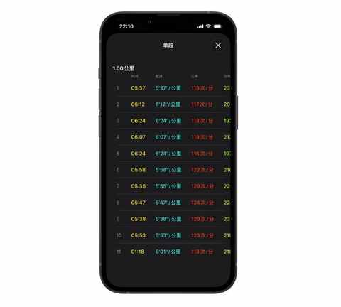
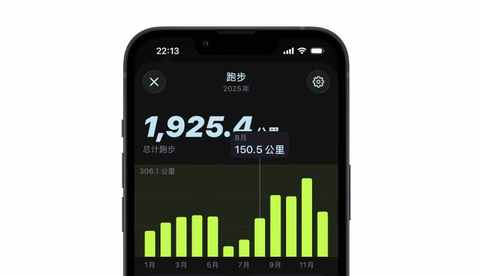
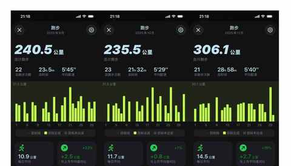
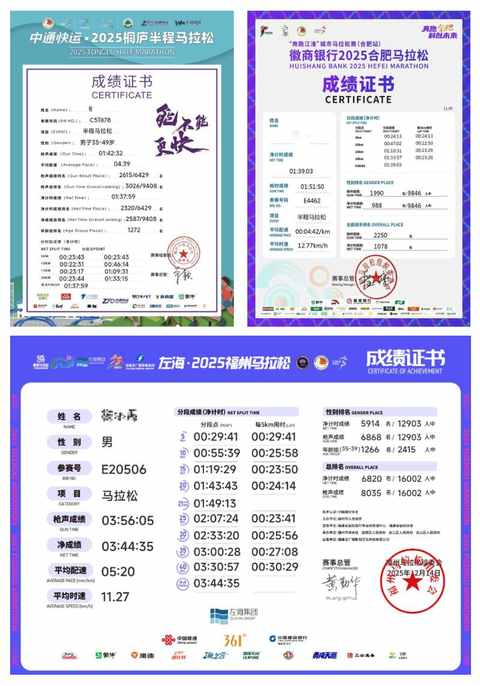

跑步30个月，首马这场“摸底考试”得了多少分？我的3点复盘
一、引子
人生中的首个全马，似乎是我跑步 30 个月的一场 “摸底考试”， 真真假假，虚虚实实，都被摸了个透。
9 天，这是距离首场全马的天数，在今天中午跑了一个 15km 之后，体感上不错，至少已经恢复到全马前 9成的状态。

今天完成的 15km，也是我完成的第 200 个 10km，从全马后第三天开始跑以来，已经完成 4 次跑步，采取的是跑一休一的节奏。

借着今天的状态，也给自己定了一个 2025 年收尾的小目标：跑到 2000km！

掐指一算，本月只需再跑75km，如单次跑15km，则是再跑 5 次，即可顺利达成年度目标。
二、我的 3 点复盘
这次全马赛后，不同于10 月和 11 月的两场半马的赛后，没有做按摩或筋膜刀，主要以休息为主，滚了两次泡沫轴作为辅助。
赛后第三天，开始复跑，虽然在跑这个 10km的时候腿依然有点酸，但跑到后半程的时候，反而能稍微提提速。

赛后恢复的过程，是一个很好的观察身体及心理各项反应的契机，基于当下对跑步的认知和赛后的感受，我有了下面这 3 点复盘。
3️⃣ 跑量是基础但不是一切
从 9 月份开始备赛，首先便是增加跑量，把跑量从 8月的150km 提到9 月的 240km，再在 11 月继续增加跑量到 300km。


从现在的角度回看，当时有点 过于沉迷于提高跑量，会觉得只要跑量提高到某个数量，成绩便稳了。
对于我的半马比赛目标是跑进 140 而言，跑量的提高能带来一些确定性的结果，但全马大不一样。
整个备赛的 3 个月，我都忽视了 跑量的组成，这个反而是最重要的一环，能直接决定在赛场上的表现。
2️⃣ 准备不足易跑崩
① 对赛道的了解不够
既然是比赛，除了天气情况需提前了解，赛道情况是更是要花功夫去做功课的部分。
尤其是我这种，从外地到一个陌生的城市比赛的情况，赛道上的每一条路，几乎都是第一次踏足。
哪里有桥，哪里有坡，哪里有弯道，哪里折返……都是很重要的细节。
特别是本次从 E 区出发，get 到一个从后面分区出发，极其重要的教训：要对前 5-8km 赛道的拥挤情况，有一个合理的预期，从而不让拥堵影响到心态。
② 30km+的长距离跑的少了
30km 之后，“撞墙”的感受便越来越明显，刚开始掉速之后还能迈开腿，坚持不到 100m 便只能维持着跑动，看着身后的跑友超过自己，再超过前面的其他跑友们。
究其原因，只有一个：长距离跑少了，肌肉耐力不足。
1️⃣ 把大目标拆分为多个小目标
如果用跑动距离来做拆分，一场全马的42.195km：大约是 8 个 5km， 大约是 4 个 10km， 大约是 2 个半马。
想在比赛中达到成绩目标，不仅需要一定的速度，更需要超强的耐力。

几乎所有比赛 的成绩 证书，都会给到每 5km 的成绩作为节点来展示，侧面说明 5km 是很重要的参考。
在接下来日常的跑步中，我会每月都自测 5km 和 10km 的用时，再辅助每月 1-2 次 30km 以上的渐加速的长距离。
三、结语
首马这场“摸底考试”，我给自己打 75 分。
虽然未达成赛前预期的 330 的大目标，也有这样或那样的不足，稍有遗憾的结果反而更能让我认清现实，是跑步 30 个月的一个阶段性总结 。
2000公里的年度目标近在眼前，而更远的奔跑之路，才刚刚开始！
近期文章
90年，35岁，跑步30个月，3442km，带来的5个改变
真香！坚持使用小鹤双拼一年后，这4个感受不吐不快
农村、大专生、笨小孩：我的来时路
双持党的秋冬体验：当指纹识别频频失效，才懂得FaceID的好处
不思考，你就会买很多并不需要的东西
别再问我省多少油钱了！作为 8年新能源车主，我想说
35岁的这个11月，我竟挑战了这么多“第一次”
90年，35岁，日更90天，有了这 3 个意外收获
听播客5年，日均108分钟：这3个收获，让我认识到“声音”的力量
小米高端化成了吗？拿15S Pro当主力机4个月，我有这5个真实感受
嘿！还记得“为QQ等级挂机”的岁月吗？来晒晒你的等级吧！